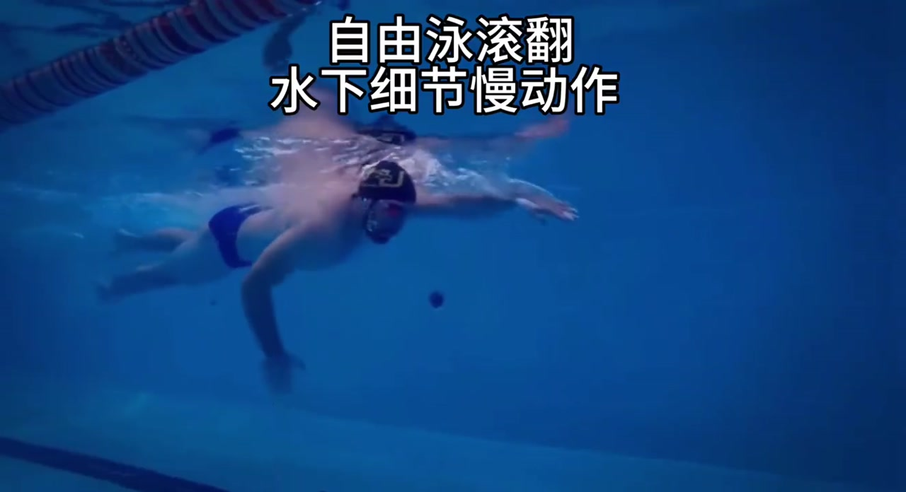
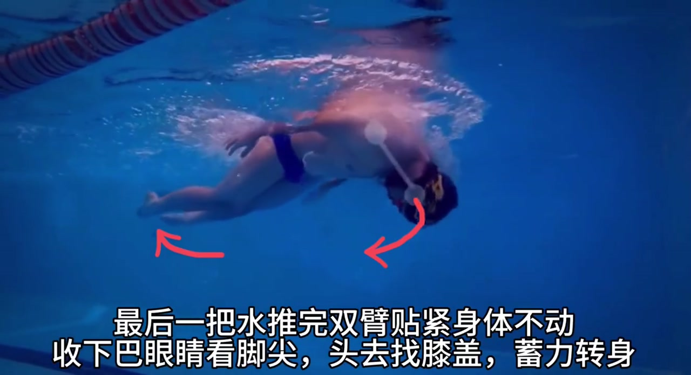
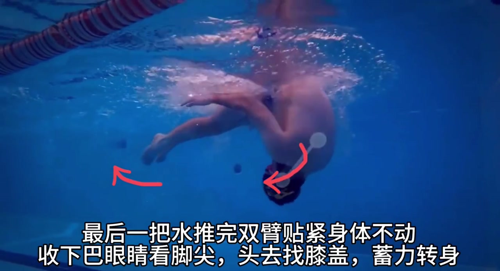
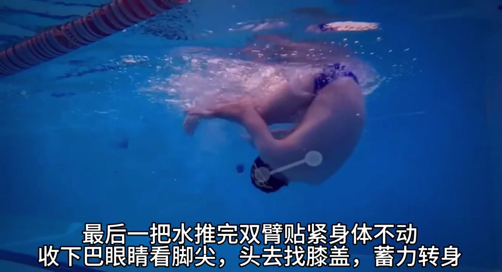
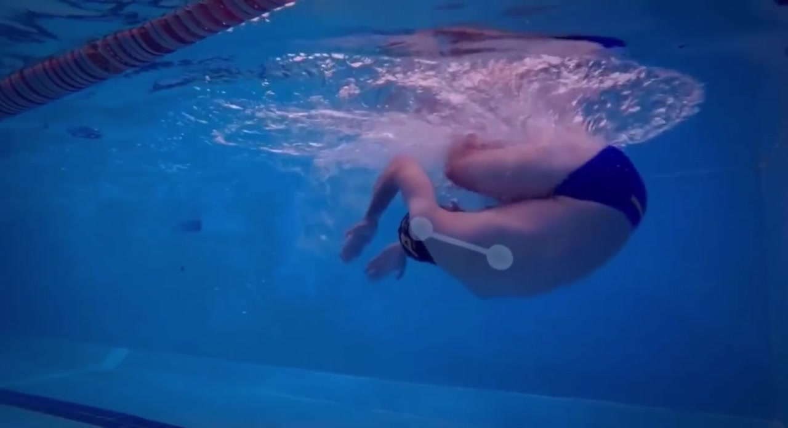
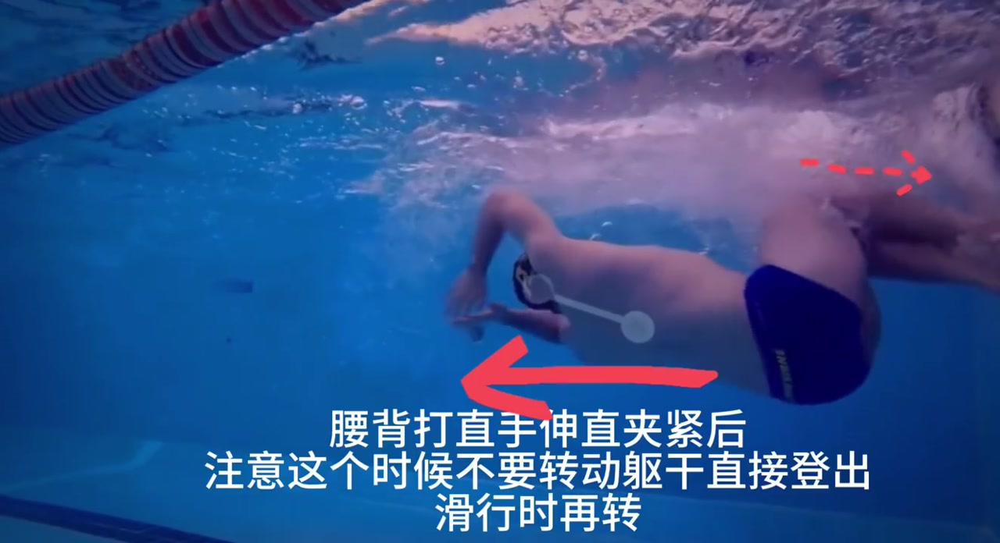
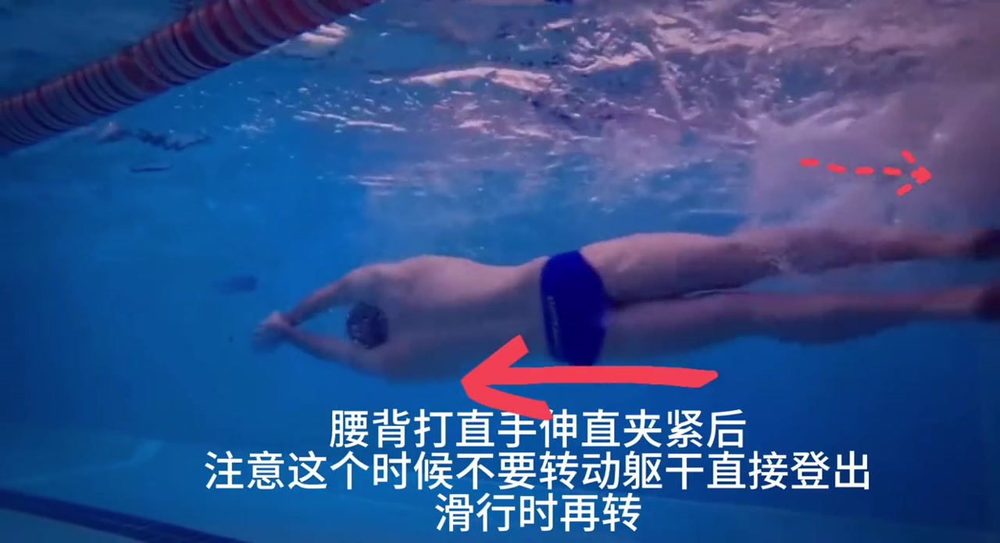

开场 · 00:00
水下慢动作定调：把滚翻拆成可跟练的节拍
片头白字打出「自由泳滚翻 / 水下细节慢动作」，镜头从水下侧方跟拍一位戴泳帽的泳者。笔记文案写明内容「来源于国外网站上的，自由泳滚翻技巧」，属于教学合集类搬运剪辑——节奏很快，11 秒内口播与画面字幕同步走完翻滚转身的关键步骤。

步骤 1 · 00:00–00:03
最后一把水推完：双臂贴紧身体不动
口播第一句就点出翻滚前的收臂姿态——「最后一把水推完双臂贴紧身体不动」。画面里泳者完成最后一次划水后，双臂迅速收拢贴在躯干两侧，不再外划或摆动，为接下来的向前翻滚腾出旋转空间。这是滚翻转身的第一道「刹车+蓄力」动作：手臂贴紧能减少水阻，也让身体更容易整体向前翻转。

步骤 2 · 00:03–00:05
收下巴、眼看脚尖、头找膝盖：把身体蜷成紧凑的球
紧接着口播连续给出三个身体 cue：「手下把眼睛看巧尖」（Whisper 识别为「巧尖」，结合画面应为「脚尖」）、「头去找膝盖」。画面同步出现红色弧形箭头标出头部向前下方翻滚的轨迹，以及脚部向上翻转的方向。泳者下巴内收、视线朝向脚尖，头部主动靠近膝盖，整个身体折叠成紧凑的蜷曲姿态——这是翻滚半径最小的关键姿势。

步骤 3 · 00:05–00:07
蓄力转身：身体整体向前翻滚
口播喊出「蓄力转身」，画面里泳者已经完全蜷曲成球状，正在池壁前方做向前下方的翻滚旋转。白色标记线叠加在躯干上，强调身体折叠的轴心位置。这一瞬间身体从「游进姿态」过渡到「翻滚姿态」，旋转动量正在积累，为触壁蹬出做准备。


步骤 4 · 00:07–00:09
腰背打直、手伸直夹紧：蹬壁前的伸展姿态
翻滚接近完成时，口播提示「腰背打直 手伸直加紧后」——泳者双脚即将或已经触壁，身体从蜷曲状态迅速伸展：腰背绷直、双臂向前伸直并夹紧在头部两侧，进入蹬壁前的流线型预备姿态。画面里泳者身体已经翻转过来，面朝池壁方向。

步骤 5 · 00:09–00:11
不要转躯干直接蹬出，滑行时再转
全片最关键的技术提醒出现在最后几秒：「注意这个时候不要转动膝盖直接登出，滑行实在转」。结合画面白字「注意这个时候不要转动躯干直接登出 / 滑行时再转」，口播里的「膝盖」应为 Whisper 对「躯干」的误识。意思是蹬壁离墙时不要急着侧身转回游进姿态，而是保持流线型直接蹬出，等滑行一段距离后再开始转体恢复划水——这是很多初学者容易犯的错误：蹬壁瞬间就侧身，破坏了流线型的推进效率。
Whisper 将「躯干」误识为「膝盖」，以画面烧录字幕为准。蹬壁阶段的核心要点是：保持流线型、不要提前转体。

11 秒回顾：滚翻五拍口诀
按视频时间顺序，口播+画面共同给出的自由泳滚翻步骤可以浓缩为五拍：
- 收臂贴紧（00:00）— 最后一把划水完成，双臂夹紧躯干
- 收下巴蜷体（00:03）— 眼看脚尖，头找膝盖，身体蜷成紧凑的球
- 蓄力转身（00:05）— 整体向前下方翻滚
- 腰背打直伸展（00:07）— 翻滚完成，双臂前伸准备蹬壁
- 流线蹬出、滑行再转（00:09）— 不提前转躯干，保持流线型蹬出后滑行